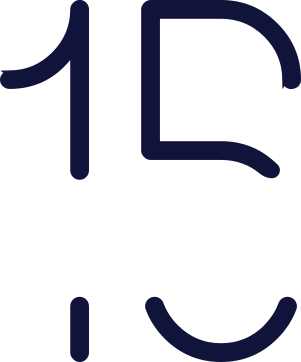

Every enterprise has an invisible brain — the collective intelligence that drives decisions, priorities, operations, and technology. We help organizations codify it with AI, turning it into a resilient, scalable capability.
Enterprise Brain is an enterprise's collective intelligence that drives decisions, priorities, operations, and technology. We help codify this through our unique A4B (AI for Business) solution, which brings information access, veracity, and intelligence into daily actions. We achieve this with four foundation blocks and one intelligent front door.
The governed data
foundation behind
enterprise decisions.
The definitions, rules,
metrics, and processes
that give data meaning.
The expertise and
experience embedded
across the organization.
The intelligence layer that
turns enterprise knowledge
into decisions and action.
A single point of access where enterprise decision-makers ask questions in natural language and get answers grounded in the business.
AI for Business (A4B) offers bespoke, platform-like capabilities that harness your enterprise BI, data, and business context with security. It is built on an advanced architecture and establishes a single, intelligent "front door" for enterprise decision-makers. By unifying existing BI investments, standardizing semantic KPI definitions, and layering deep business context with multi-LLM orchestration, A4B enables natural language querying for real-time, contextual decisioning.
Together, these capabilities eliminate reporting fragmentation, standardize business definitions across the organization, and accelerate decision-making through agentic AI and advanced language models. This enables leaders to interact with enterprise data naturally, confidently, and at business speed.
Technologically, A4B relies on a cloud-native AWS backend integrated with leading cloud data platforms and flexible LLM routing.
AWS Elastic Fabric, Amazon EKS, and AWS Lambda for scalable compute, serverless execution, and secure enterprise deployment.
Native support and dual-engine optimization for both Snowflake and Databricks, ensuring low-latency query execution against massive enterprise datasets.
Ingestion pipelines supporting multi-BI ecosystems (Tableau, Power BI, MicroStrategy, BOBJ, Qlik), backed by agentic metadata extractors.
Model-agnostic orchestration (hosting Claude, GPT-4, Llama 3, and specialized enterprise LLMs) optimized for token efficiency, accuracy, and enterprise governance.
For 15 years, USEReady has helped enterprises turn data into better decisions. What began with analytics has evolved through data modernization and decision intelligence to enterprise AI — helping organizations modernize their foundations, connect business knowledge, and apply AI to real business needs.
Today, we bring that experience together to help enterprises build the intelligence infrastructure needed for the next era of business: where trusted data, business context, institutional knowledge, and AI work together to help people and AI agents make better decisions.

USEReady has evolved alongside those shifts — from analytics and self-service BI to data modernization, Decision Intelligence, and AI for Business.
Helping enterprises make better decisions through modern analytics and self-service BI.
Building trusted data foundations through engineering, governance, modernization, and cloud.
Connecting business knowledge, semantics, orchestration, and AI to enable more intelligent, context-aware decision-making.
Bringing together trusted data, business context, institutional knowledge, and AI to create enterprise intelligence.
Organizations choose USEReady because we combine business understanding, technology expertise, and enterprise experience to turn data and AI into business outcomes.
We start with business outcomes, not technology.
We work across the platforms enterprises already trust, from Snowflake and Databricks to Tableau, Salesforce, Microsoft, and AWS.
We connect data, business context, and AI across the enterprise — not in isolated technology silos.
We measure success by the value we continue to create, not simply by project completion.
We help enterprises give people and AI agents a shared understanding of the business.
Global delivery across North America, Europe, and Asia
Trusted by Fortune 500 and large enterprises
Strategic partnerships with the world's leading technology platforms
Our success isn't defined only by the quality of our work. It's shaped by how we think, how we collaborate, and how we show up for our customers and each other every day. These five values guide every decision we make and every relationship we build.
Everything starts with our customers. We listen first, understand their goals, and measure our success by the outcomes we help them achieve.
We do what's right, even when no one's watching. We build trust through honesty, transparency, accountability, and by standing behind our commitments.
We believe great ideas can come from anywhere. We stay open, keep learning, and put collective success ahead of individual recognition.
We grow by supporting one another. Whether it's our colleagues, our customers, our partners, or the communities we're part of, we believe meaningful relationships create lasting impact.
Technology never stands still, and neither do we. We embrace change, learn from every experience, and constantly look for better ways to serve our customers.
At USEReady, we believe great technology starts with understanding how businesses work. Our culture is built around listening first, learning continuously, and working alongside our customers to solve complex business challenges. Our architects, engineers, consultants, data specialists, and AI practitioners bring together technical expertise and business understanding to turn organizational knowledge into lasting enterprise intelligence.
Tell us where your decisions get stuck. We'll show you what an intelligent front door looks like for your business.
Every section carries the section ID, SEO section title, and SEO description from the content brief as id, data-seo-title, and data-seo-description attributes — inspect any section to hand them to the web team.